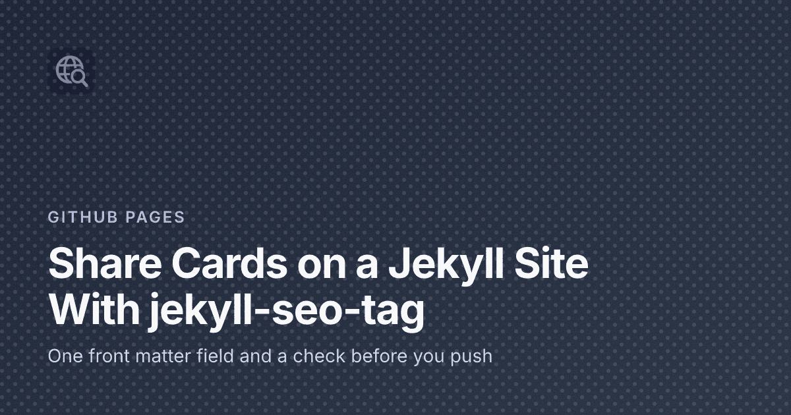
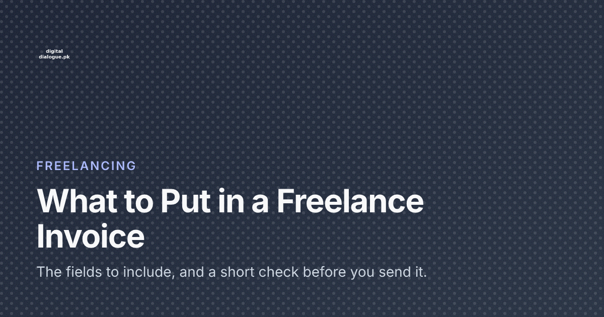
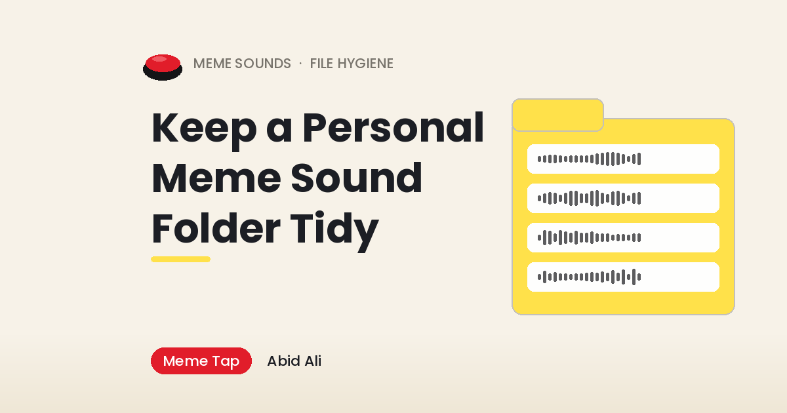
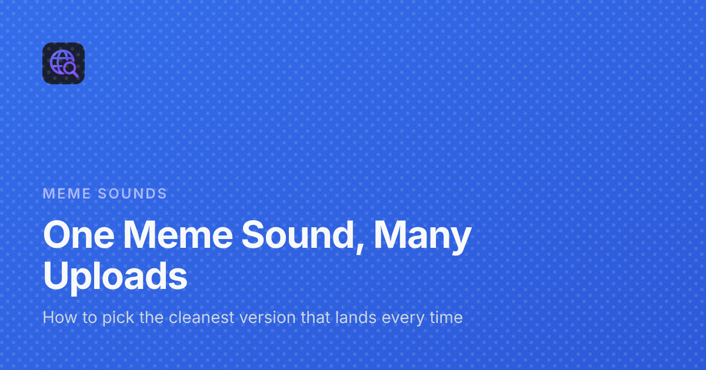
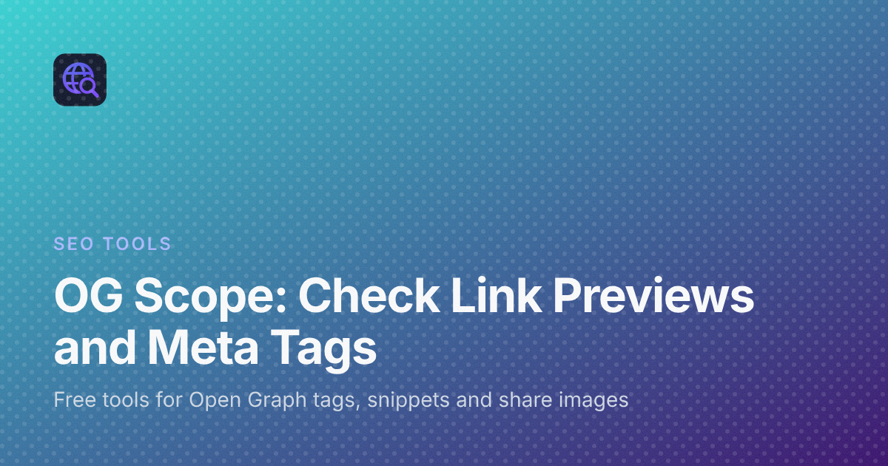
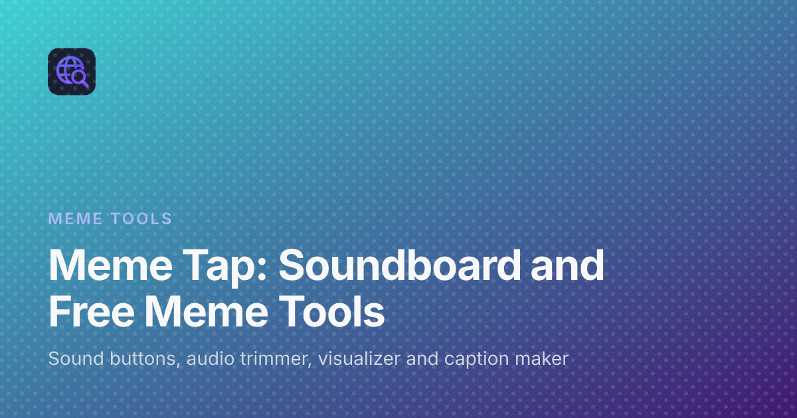
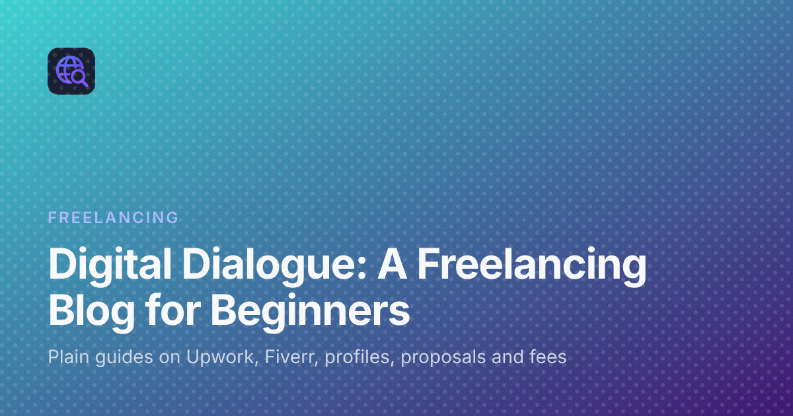
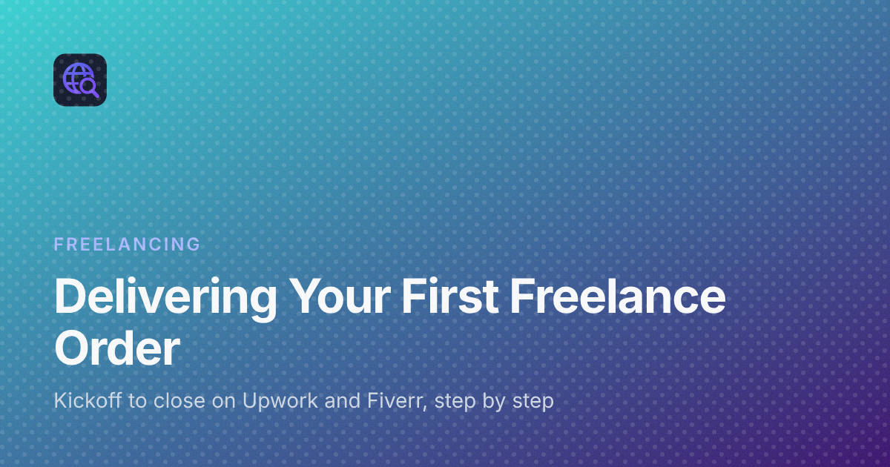

Blog
Practical notes on freelancing and web development.
-

How to Read a Soundboard Page in Five Minutes: Trending, Recently Added, Random and Favourites
Hundreds of buttons and no idea where to start? Four built-in views answer four different questions: what is popular, what is new, what is a surprise and what is yours.
-

Why Meta Tags Added by JavaScript Don't Show in Link Cards: Fixing a Static Page on GitHub Pages
If the card for your GitHub Pages link is empty although the page looks right, the tags may only exist after JavaScript runs. Compare the raw HTML with the rendered page, then write the tags into the file.
-

Share Cards on a Jekyll Site on GitHub Pages: One Front Matter Field With jekyll-seo-tag and a Check Before You Push
jekyll-seo-tag writes most share tags for you. Add one image field, set your site url, and read the built HTML before you push so every post looks right when its link is shared.
-

What to Put in a Freelance Invoice (and What to Check Before You Send It)
The fields a freelance invoice needs, a short check before you send it, and how to keep a record you can find again.
-

How to Keep a Personal Meme Sound Folder Tidy: Names, Lengths and a Weekly Prune
Stop auditioning three almost-identical files mid-edit. One working folder, names you can search, a trim you do once, and a short weekly prune.
-
A Simple Folder and File-Naming System for Your First Freelance Clients
Stop hunting for final2.png. A plain folder structure, a file-naming pattern and a short project note that keep client work tidy from the first job.
-

One Meme Sound, Many Uploads: How to Pick the Cleanest Version
Search a famous meme sound and you get several versions. A quick way to compare them and choose the one that starts clean, sounds clear and fits your use.
-

OG Scope: Free Tools to Check Link Previews and Meta Tags
A plain introduction to OG Scope: what each free tool checks, who it helps, and a simple order to use them before you share a link.
-

Meme Tap: A Browser Meme Soundboard with Free Meme Tools
What Meme Tap offers, from tap-to-play sound buttons to a free audio trimmer, audio visualizer and meme caption generator, and how to use each one.
-

Digital Dialogue: A Practical Freelancing Blog for Beginners
What Digital Dialogue covers, who it is written for, and where a new freelancer should start reading, from Upwork and Fiverr basics to fees and proposals.
-

Delivering Your First Order on Upwork or Fiverr: From Kickoff Message to a Closed Job
Winning the first job is only half of it. Here is a calm, step-by-step way to run your first order, from the kickoff message to the final delivery and a clean close.